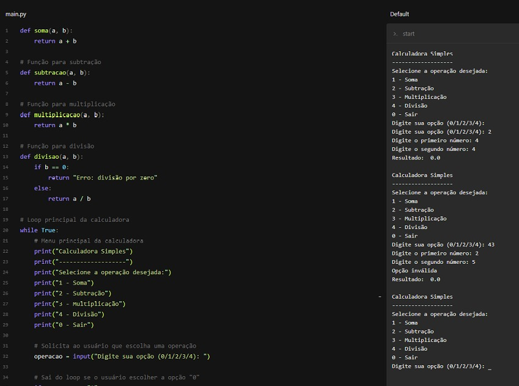

Calculadora simples utiliazndo PYTHON Jogo da velha utilizando PYTHON
Formação
Sou um estudante de Análise e Desenvolvimento de Sistemas, atualmente cursando meu último semestre na Universidade Anhanguera. Durante minha formação, tive a oportunidade de desenvolver habilidades essenciais para a área de tecnologia, como programação, análise de sistemas, banco de dados, entre outras. Meus estudos sempre foram uma prioridade para mim, e isso reflete no meu histórico acadêmico. Sou um estudante proativo e dedicado, que busca sempre estar atualizado com as últimas tendências e novidades do mercado de tecnologia. Além disso, participei de projetos acadêmicos desafiadores, que me permitiram desenvolver habilidades práticas em programação e desenvolvimento de sistemas. Com o término da minha graduação se aproximando, sinto-me preparado para ingressar no mercado de trabalho e aplicar todo o conhecimento que adquiri ao longo da minha formação.